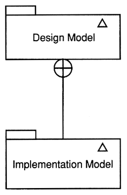
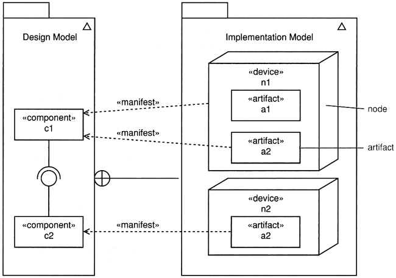
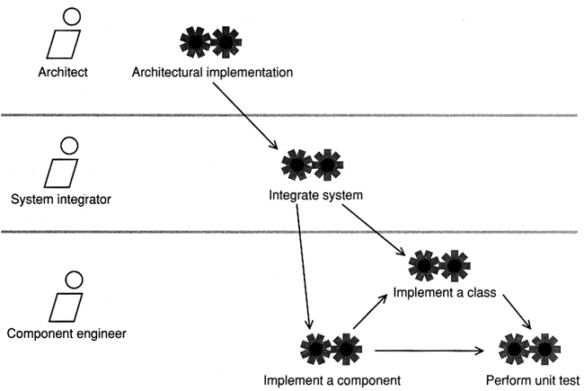
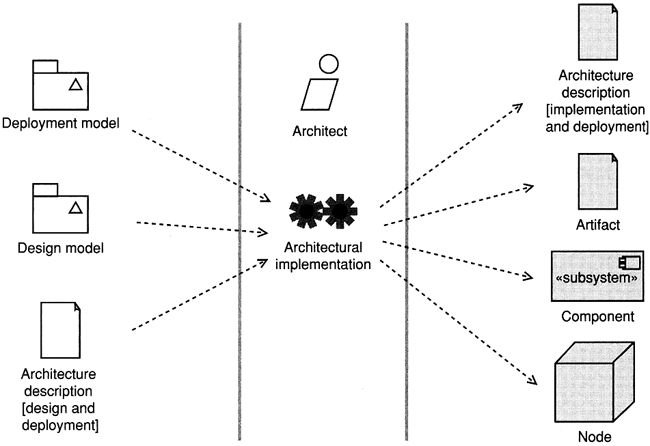
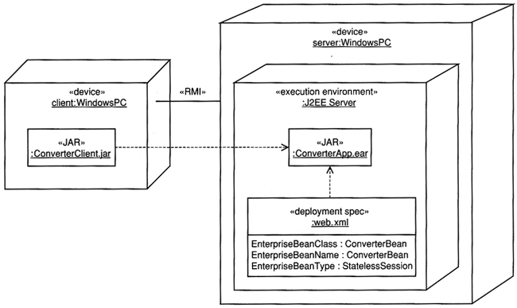
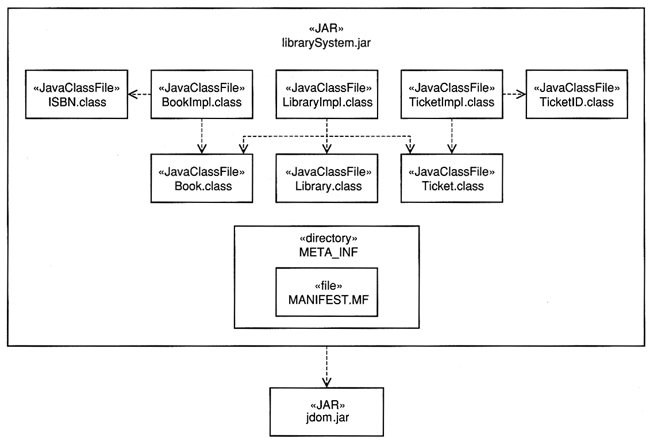

Software Engineering
The Implementation Workflow
The Analysis Workflow
Agenda
-
Implementation artifacts - metamodel
-
Relationship between design and implantation mode
-
Implementation workflow detail
-
Architectural implementation
-
The deployment diagram
-
Artifacts nested within artifacts
-
See modules in Background and Guidelines
Implementation Artifacts - Metamodel
- The implementation workflow is the main focus of the Construction phase.
- Implementation is about transforming a design model into executable
code.
- The implementation model is really just the implementation view of the
design - that is, it is a part of the design model.

Relationship between Design and Implantation Model
- The implementation model specifies how the design elements are
manifest by artifacts and how these artifacts are deployed onto nodes.

- The focus is on producing the implementation and deployment models as
part of the architectural implementation.
- System integration, class implementation, ad unit testing are
programming activities rather that analysis and design activities.

Architectural implementation is about identifying architecturally significant
components and mapping them to physical hardware.

The Deployment Diagram
- The deployment diagram maps the SW architecture created in design
to the HW architecture that executes it. In distributed system, it models
the distribution of the SW across physical nodes.
- There are two forms of deployment diagrams:
- Descriptor form deployment diagram - artifacts deployed on nodes.
A node represents a type of HW. Similarly, an artifact represents a
type of of physical SW artifact such as a jar file.
- Instance form deployment diagram - artifact instances deployed on
node instances.
- In the design workflow, focus mainly on nodes on node instances and
connections.
- In the implementation workflow, focus on assigning artifact instances to
node instances (instance form) or artifacts to node (descriptor form).
- A node represents a type of computational resource.
- An artifact represents the specification of a real world
thing such as a file.
- Artifacts can manifest one or more components.

A simple instance form of deployment diagram - a currency converter
application.
Artifacts Nested within Artifacts
